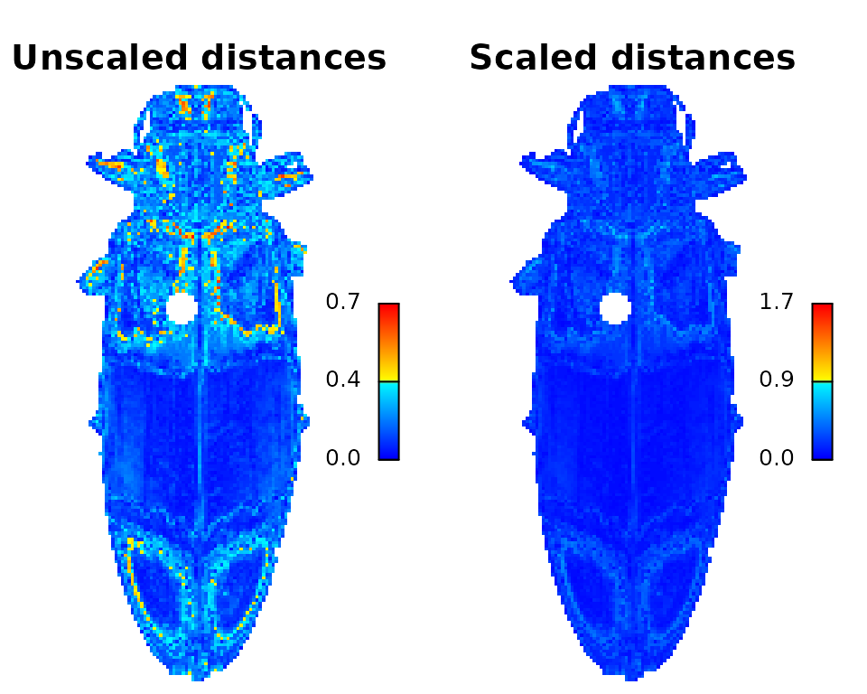
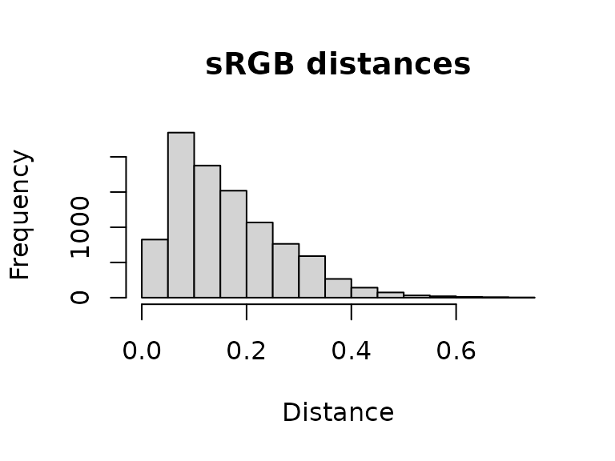
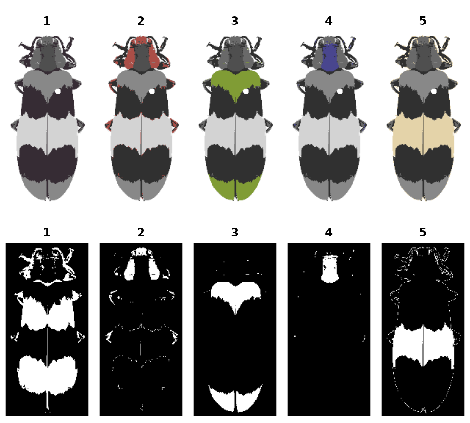

Step 5: Exporting & visualizing output
step05_visualization_export.RmdThe whole point of this package is to make it easier to use other methods!
-
Introduction
-
Step 0: Image acquisition and preparation
-
Step 1: Loading & processing images
-
Step 2: Initial clustering
-
Step 3: Refinement
-
Step 4: Tweaks & edits
- Step 5: Visualizing & exporting output
You can also tour the functions in the function gallery.
Visualizations
Making color maps is an obviously visual process, so it’s good to use visual feedback as much as possible. We’ve already seen a few of these functions in action, specifically plotColorPalette and plotImageArray, which are used in almost every function that produces a recolorize object. I’ll point out three others that I think are quite useful: imDist, plotColorClusters, and splitByColor (which also doubles as an export function).
imDist
Compares two versions of the same image by calculating the color distance between the colors of each pair of pixels (imDist), and gives you a few more options for plotting the results (imHeatmap). You can use it to get the distances between the original image and the color map:
library(recolorize)
img <- system.file("extdata/ephippigera.png", package = "recolorize")
rc <- recolorize2(img, plotting = FALSE)
#>
#> Using 2^3 = 8 total bins
layout(matrix(1:2, nrow = 1))
par(mar = c(0, 0, 2, 1))
# calculates the distance matrix and plots the results
dist_original <- imDist(readImage(img),
recoloredImage(rc),
color_space = "sRGB",
main = "Unscaled distances")
# more plotting options - setting the range is important for comparing
# across images (max is sqrt(3) in sRGB space, ~120 in Lab)
imHeatmap(dist_original, range = c(0, sqrt(3)),
main = "Scaled distances") The resulting object is a simple matrix of distances between each pair of pixels in the given color space. These are essentially residuals:
hist(dist_original, main = "sRGB distances", xlab = "Distance")
A word of warning here: it is easy to look at this and decide to come up with a procedure for automatically fitting color maps using a kind of AIC metric, trying to get the lowest SSE with the minimum set of color centers. You’re welcome to try that, but given that this is discarding spatial information, it is probably not a general solution (I haven’t had much luck with it). But there is probably some room to play here.
splitByColor
This is a dual-use function: by splitting up the color map into individual layers, you not only can examine the individual layers and decide whether they need any editing or merging, but you also get out a binary mask representing each layer, so you can export individual patches.
img <- system.file("extdata/corbetti.png", package = "recolorize")
rc <- recolorize2(img, cutoff = 45, plotting = FALSE)
#>
#> Using 2^3 = 8 total bins
layout(matrix(1:10, nrow = 2, byrow = TRUE))
par(mar = c(0, 0, 2, 0))
# 'overlay' is not always the clearest option, but it is usually the prettiest:
layers <- splitByColor(rc, plot_method = "overlay")
# layers is a list of matrices, which we can just plot:
for (i in 1:length(layers)) {
plotImageArray(layers[[i]], main = i)
}
Exporting
Exporting to images
The most direct thing you can do is simply export your recolored images as images, then pass those to whatever other tool you’d like to use, although obviously this doesn’t take full advantage of the format:
# export color map
recolorize_to_png(rc, filename = "corbetti_recolored.png")
# export individual layers from splitByColor
for (i in 1:length(layers)) {
png::writePNG(layers[[i]],
target = paste0("layer_", i, ".png"))
}pavo package
You can also convert a recolorize object to a classify object in the wonderful pavo package and then run an adjacency analysis. Bonus points if you have reflectance spectra for each of your color patches: by combining the spatial information in the color map with the coldist object generated by spectral measurements, you can run adjacency analysis for the visual system(s) of your choice right out of the box!
# convert to a classify object
as_classify <- classify_recolorize(rc, imgname = "corbetti")
adj_analysis <- pavo::adjacent(as_classify, xscale = 10)
# run adjacent directly using human perceptual color distances (i.e. no spectral data - proceed with caution)
adj_human <- recolorize_adjacency(rc)You can also run an adjacency analysis with recolorize_adjacency, but only as long as you keep your skeptic hat on. This function works by calculating a coldist object right from the CIE Lab colors in the color maps, which are themselves probably derived from your RGB image, which is at best a very loose representation of how these colors appear to human eyes. The only reason this is at all reasonable is that it’s producing these values for human vision, so you will be able to see if it’s completely unreasonable. This is fine for getting some preliminary results or if you’re working with aggregate data from many sources and you’re content with specifically human (not just non-UV, but only human) vision. Otherwise, it’s probably a last resort.
patternize
Because of the way patternize is structured, going from recolorize to patternize is slightly more involved. See the GitHub (https://github.com/hiweller) for links to a worked example of this, but the general process is:
- Load images into
patternizeand align them into a list of rasters, using e.g.alignLan(). - Use
brick_to_arrayto convert the list of rasters to a list of images. - Cluster images as normal, ensuring that all images have the same set of colors.
- Use
recolorize_to_patternizeto convert clustered images back to a raster list. - Proceed with downstream
patternizeanalyses.